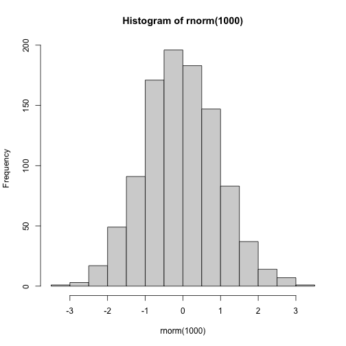

The goal of webexercises is to enable instructors to easily create interactive web pages that students can use in self-guided learning. Although webexercises has fewer features than RStudio’s learnr package, it is more lightweight: whereas learnr tutorials must be either hosted on a shiny server or run locally, webexercises creates standalone HTML files that require only a JavaScript-enabled browser. It is also extremely simple to use.
Installation
You can install webexercises from CRAN using:
install.packages("webexercises")You can install the development version from GitHub with:
devtools::install_github("psyteachr/webexercises")Setup
RMarkdown
Examples are provided in templates. To create an RMarkdown file from the webexercises template in RStudio, click File -> New File... -> RMarkdown and in the dialog box that appears, select From Template and choose Web Exercises.
Alternatively (or if you’re not using RStudio) use:
rmarkdown::draft("exercises.Rmd", "webexercises", "webexercises")Knit the file to HTML to see how it works. Note: The widgets only function in a JavaScript-enabled browser.
Quarto
You can set up a single template quarto file with the function create_quarto_doc(), or add the necessary files and setup to include webexercises in a quarto project with add_to_quarto().
Bookdown
You can add webexercises to a bookdown project or start a new bookdown project using add_to_bookdown().
# create a new book
# use default includes and scripts directories (include and R)
# output_format can be bs4_book, gitbook, html_book or tufte_html_book
add_to_bookdown(bookdown_dir = "demo_bs4",
output_format = "bs4_book",
render = TRUE)
# update an existing book with custom include and script directories
add_to_bookdown(bookdown_dir = ".",
include_dir = "www",
script_dir = "scripts",
output_format = "gitbook")Creating interactive widgets with inline code
The webexercises package provides functions that create HTML widgets using inline R code. These functions are:
| function | widget | description |
|---|---|---|
fitb() |
text box | fill-in-the-blank question |
mcq() |
pull-down menu | multiple choice question |
torf() |
pull-down menu | TRUE or FALSE question |
longmcq() |
radio buttons | MCQs with long answers |
hide() and unhide()
|
button | solution revealed when clicked |
The appearance of the text box and pull-down menu widgets changes when users enter the correct answer. Answers can be either static or dynamic (i.e., specified using R code). Widget styles can be changed using style_widgets().
These functions are optimised to be used with inline r code, but you can also use them in code chunks by setting the chunk option results = 'asis' and using cat() to display the result of the widget.
# echo = FALSE, results = 'asis'
opts <- c("install.package",
"install.packages",
answer = "library",
"libraries")
q1 <- mcq(opts)
cat("What function loads a package that is already on your computer?", q1)What function loads a package that is already on your computer?
- install.package
- install.package
- install.packages
- install.packages
- library
- library
- libraries
Fill-In-The-Blanks
Create fill-in-the-blank questions using fitb(), providing the answer as the first argument.
fitb(4)- 2 + 2 is _
You can also create these questions dynamically, using variables from your R session (e.g., in a hidden code chunk).
x <- sample(2:8, 1)
fitb(x)- The square root of 49 is: _
The blanks are case-sensitive; if you don’t care about case, use the argument ignore_case = TRUE.
fitb("E", ignore_case = TRUE)- What is the letter after D? _
If you want to ignore differences in whitespace use, use the argument ignore_ws = TRUE (which is the default) and include spaces in your answer anywhere they could be acceptable.
fitb(c("library( tidyverse )", "library( \"tidyverse\" )", "library( 'tidyverse' )"), ignore_ws = TRUE, width = "20")- How do you load the tidyverse package? ____________________
You can set more than one possible correct answer by setting the answers as a vector.
- Type a vowel: _
You can use regular expressions to test answers against more complex rules.
fitb("^[a-zA-Z]{3}$", width = 3, regex = TRUE)- Type any 3 letters: ___
Multiple Choice
Set up a multiple-choice drop-down menu using mcq().
What package helps you load CSV files?
- tidyr
- tidyr
- dplyr
- dplyr
- readr
- readr
- ggplot2
“Never gonna give you up, never gonna:
- let you go
- let you go
- turn you down
- turn you down
- run away
- run away
- let you down
” - “I
- bless the rains
- bless the rains
- guess it rains
- guess it rains
- sense the rain
down in Africa” -Toto
True or False
Make quick true/false questions with torf().
- True or False? You can permute values in a vector using
sample(). TRUE / FALSE
Longer MCQs
When your answers are very long, sometimes a drop-down select box gets formatted oddly. You can use longmcq() to deal with this. Since the answers are long, It’s probably best to set up the options inside an R chunk with echo=FALSE.
opts_p <- c(
"the probability that the null hypothesis is true",
answer = "the probability of the observed, or more extreme, data, under the assumption that the null-hypothesis is true",
"the probability of making an error in your conclusion"
)
longmcq(opts_p)What is a p-value?
- the probability that the null hypothesis is true
- the probability that the null hypothesis is true
- the probability of the observed, or more extreme, data, under the assumption that the null-hypothesis is true
- the probability of the observed, or more extreme, data, under the assumption that the null-hypothesis is true
- the probability of making an error in your conclusion
What is true about a 95% confidence interval of the mean?
- 95% of the data fall within this range
- 95% of the data fall within this range
- there is a 95% probability that the true mean lies within this range
- there is a 95% probability that the true mean lies within this range
- if you repeated the process many times, 95% of intervals calculated in this way contain the true mean
Checked sections
Create sections with the class webex-check to add a button that hides feedback until it is pressed. Add the class webex-box to draw a box around the section (or use your own styles).
::: {.webex-check .webex-box}
I am going to learn a lot: `r torf(TRUE)`
```{r, results='asis', echo = FALSE}
opts <- c(
"the probability that the null hypothesis is true",
answer = "the probability of the observed, or more extreme, data, under the assumption that the null-hypothesis is true",
"the probability of making an error in your conclusion"
)
cat("What is a p-value?", longmcq(opts))
```
:::I am going to learn a lot: TRUE / FALSE
What is a p-value?
- the probability that the null hypothesis is true
- the probability that the null hypothesis is true
- the probability of the observed, or more extreme, data, under the assumption that the null-hypothesis is true
- the probability of the observed, or more extreme, data, under the assumption that the null-hypothesis is true
- the probability of making an error in your conclusion
Hidden solutions and hints
You can fence off a solution area that will be hidden behind a button using hide() before the solution and unhide() after, each as inline R code. Pass the text you want to appear on the button to the hide() function.
`r hide("Click here to see the solution")`
```{r, echo = FALSE}
hist(rnorm(1000))
```
`r unhide()`Plot a histogram of 1000 values from a random normal distribution.

If the solution is an RMarkdown code chunk, instead of using hide() and unhide(), you can set the webex.hide chunk option to TRUE, or set it to the string you wish to display on the button.
```{r, echo = TRUE, eval = FALSE, webex.hide = "See a hint"}
?plot
```
?plot
This work is licensed under a Creative Commons Attribution-ShareAlike 4.0 International License.